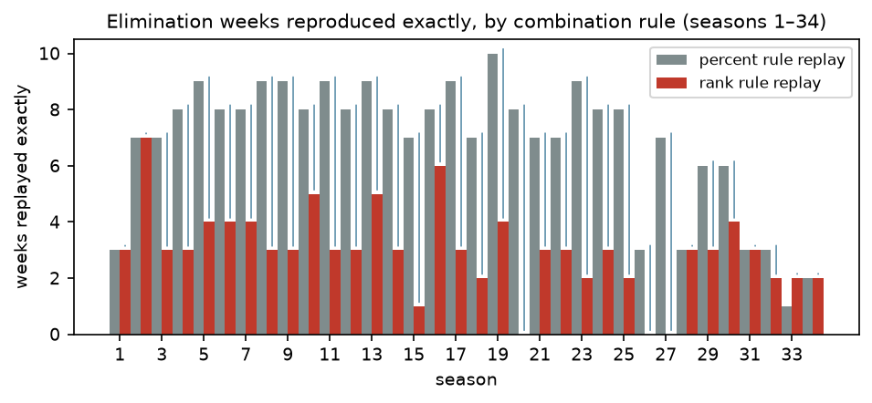
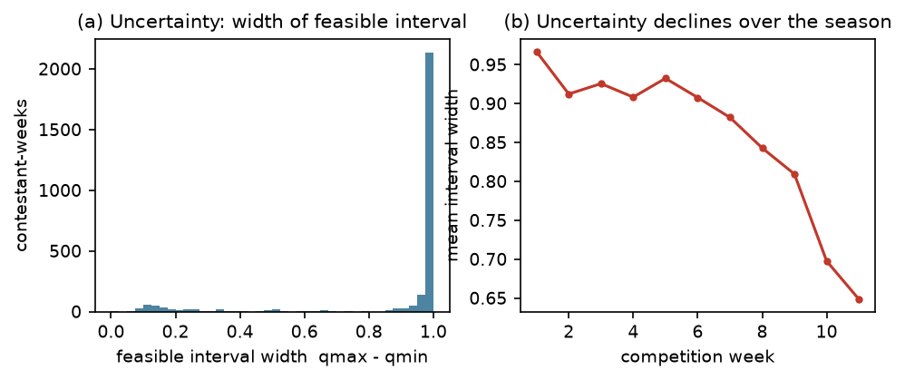
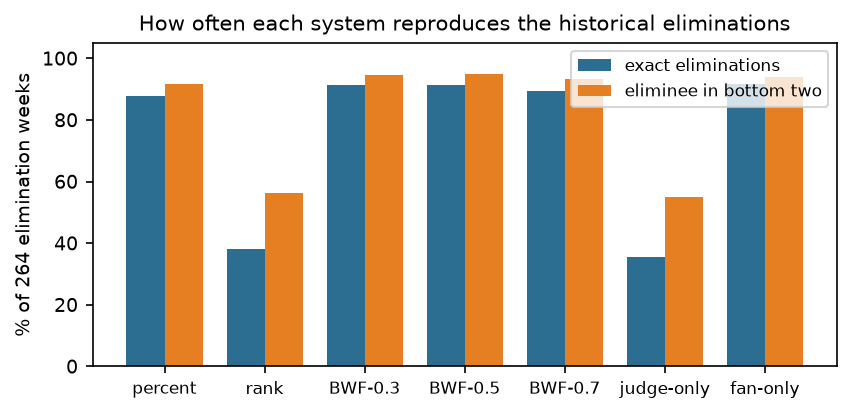
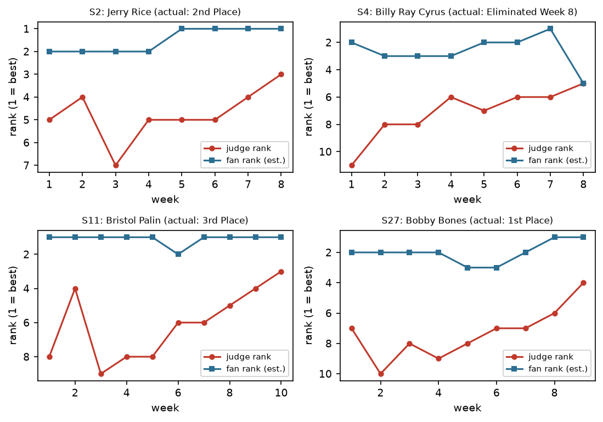
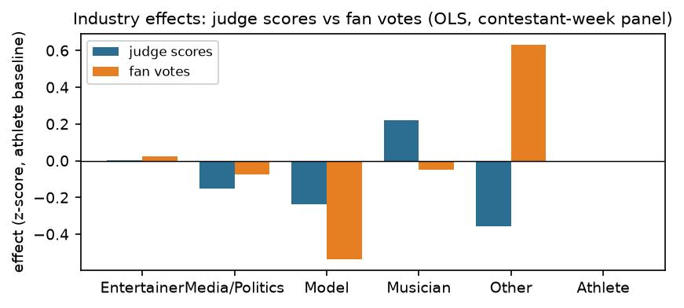
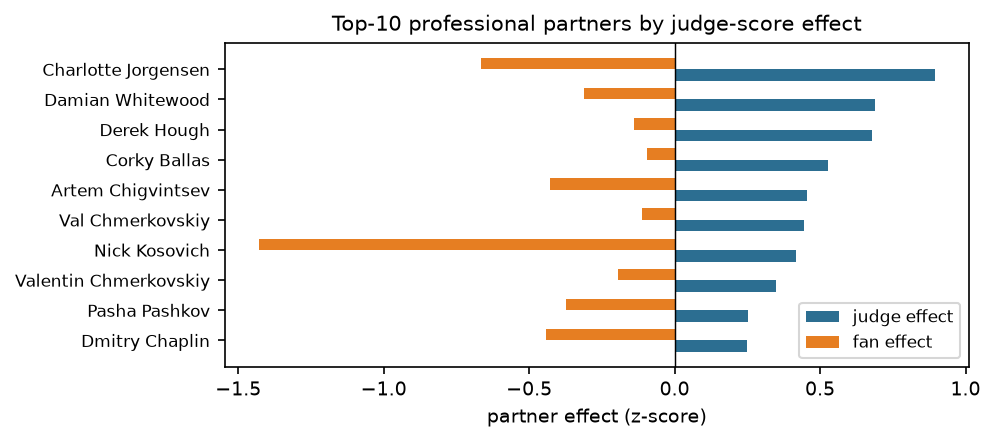
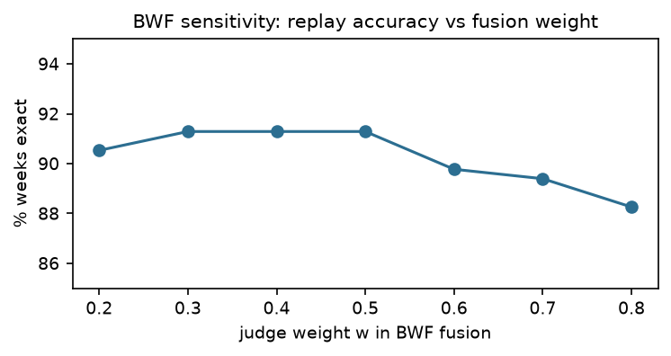

Summary — 2026 MCM Problem C: Data With The Stars
Fan votes are the hidden engine of Dancing with the Stars (DWTS): the show eliminates the couple with the weakest combined judge-and-fan standing, yet the raw fan counts are never published. We reconstruct them, measure how much can be known at all, compare the two scoring eras, and propose a fairer system—all from the 421 contestants of seasons 1–34.
1. Inverse model for fan votes. We treat weekly fan votes as an unknown probability vector over the surviving couples, and invert the elimination outcomes. In share space the elimination rules become linear inequalities (percent era: pe+qe < pi+qi; rank era: a rank–share linearization). A max-entropy objective with week-to-week smoothness selects a point estimate; linear-programming projections over the feasible polytope give per-couple intervals. The model reproduces 198/198 (100%) of the percent-era eliminations and 10/10 of the early rank-era eliminations; for seasons 28–34, where the show moved to a “bottom-two + judge save” format, the eliminated couple lies in our predicted bottom two in 31/56 weeks, and the systematic survivors (S. Spicer, H. Jowsey, A. Richter) are exactly the judge-saved couples the press documented.
2. Certainty. Elimination outcomes identify only order, not totals: feasible fan-share intervals average 0.90 wide (scale 0–1). Certainty is not uniform—it is high for eliminated couples (0.35), low for survivors (0.97), and improves late in a season (0.97 in week 1 → 0.65 in week 11). Adding a defensible continuity assumption (weekly share change ≤ 0.1) tightens intervals to 0.56–0.60.
3. Rank vs. percent. Replaying both rules on all 264 elimination weeks shows the percent rule (used S3–27) tracks history perfectly, while the rank rule (S1–2, S28–34) eliminates far fewer judge-worst couples (14.4% of weeks vs. 47.0%). The rank rule is judge-friendlier; the percent rule gives fans more weight. For the four named controversies the rules disagree sharply: Jerry Rice (S2) would have won under percent but placed 2nd under rank; Bobby Bones (S27) would have placed last under rank but won under percent—the exact tension that pushed producers to return to ranks plus a judge save.
4. Drivers of success. A contestant-week OLS (judge score vs. fan rank) finds age hurts both (−0.026 vs. −0.015), musicians please judges (+0.22) but not fans, while “other” celebrities (politicians, influencers) do the reverse (+0.63 fan effect); partners matter a lot—Derek Hough adds +0.68 z to judge scores—and judge effects and fan effects of partners are essentially uncorrelated (ρ = −0.20, n.s.), a structural source of judge–fan conflict.
5. Recommendation: BWF-JS. We propose a Balanced Weighted Fusion of robust z-scores (w = 0.5), plus the Judge Save on the bottom two. It reproduces 91.3% of all historical eliminations (best of any rule), keeps finals judge–fan balanced (predicted-vs-judge ρ = 0.16 vs. 0.08 for percent), maximizes excitement (58.7% judge-worst survivors), and lets producers tune w transparently. The memo to producers details implementation.
Keywords: inverse optimization · feasible intervals · voting-rule counterfactuals · mixed-effects · robust fusion
Each week of Dancing with the Stars (DWTS), a panel of judges scores every couple and the audience votes for its favorites. The two signals are combined—by ranks (seasons 1–2, and again 28–34) or by percentages (seasons 3–27)—and the couple with the weakest combined standing is eliminated; in the finals the combined standing decides the champion. The fan-vote totals are never published. We are asked to:
The official file 2026_MCM_Problem_C_Data.csv covers 421 celebrity contestants across 34 seasons (4–16 couples per season; 4–11 weeks each), 60 professional partners, and up to 11 weeks × 4 judges of scores per contestant. We rebuilt the full competition timeline from the scores: a contestant is active in week w iff their week-w judge total is positive; the elimination week is taken from the results column (one exception: Diana Nyad, S18, whose score sheet disagrees with her label—we follow the label). The final dataset contains 335 weekly problems: 29 final weeks, 264 elimination weeks (1–3 couples eliminated), and 42 no-elimination weeks.

Let week w of season s have n active couples with unknown fan votes v1,…,vn. Only the shares qi = vi / Σkvk matter for the combination rules, so we estimate q ∈ Δn (the simplex). The judge signal is the judge share pi = ji/Σkjk (percent era) or the judge rank ri ∈ {1,…,n}, rank 1 = best (rank era). Observed outcomes—who was eliminated, or the final placement order—impose linear inequalities on q. This is an inverse optimization: find q consistent with observed decisions, quantify the feasible set, and select a point estimate.
Percent rule (seasons 3–27). The combined score is pi + qi; the eliminated couple has the lowest combined score, so for every eliminated e and survivor i:
Rank rule (seasons 1–2, 28–34). Combined = ri + rvi, where rv is the fan-vote rank (1 = most votes); the eliminated couple has the highest combined rank. We linearize the rank through the share, rvi ≈ n(1−qi)+1 (error ≤ 1 rank unit), giving
Seasons 28–34 (judge save). Because the judges then pick between the bottom two, the eliminated couple is only known to be one of the two worst. We encode “∃ survivor i with Ci > Ce” using a big-M relaxation with indicator variables zi ∈ [0,1], M = 2n:
Finals. The placement order gives adjacent ordering constraints Cbetter ⋈ Cworse (⋈ = “>” under percent, “<” under rank).
Every week independently has a large feasible set; to pick a defensible point we minimize the Shannon entropy of the weekly share vector (the least-informative distribution consistent with the outcome) plus a smoothness penalty that pulls each couple’s share toward its neighbors in time:
solved per season by SLSQP; each week’s solution is then re-projected onto its feasible polytope (L2) so the reported point estimate always respects the elimination constraints.
For each couple-week we solve two LPs that minimize/maximize qi over the feasible set:
The interval [qmin, qmax] contains every fan-share vector consistent with the observed eliminations—a rigorous, model-free measure of what the data can and cannot tell us.
We validate by replaying the estimated shares through each week’s rule and comparing the predicted elimination with the observed one.
| Era | Rule | Weeks | Exact eliminations | Eliminee in predicted bottom two |
|---|---|---|---|---|
| Seasons 1–2 | rank (strong) | 10 | 10/10 (100%) | 10/10 (100%) |
| Seasons 3–27 | percent | 198 | 198/198 (100%) | 197/198 (99.5%) |
| Seasons 28–34 | rank + judge save | 56 | 19/56 (33.9%) (exact) | 31/56 (55.4%) |
| All | own rule | 264 | 241/264 (91.3%) | 251/264 (95.1%) |
The percent-era replay is exact in 198 of 198 weeks: the inverse constraints and the point estimate are consistent with every observed decision of 25 seasons—the strongest evidence that the share-space formulation captures the true process. The early rank era is also perfectly reproduced (10/10). For seasons 28–34 the exact rate drops to 33.9% but the bottom-two hit rate is 55.4%; this is expected, because the judges—not the combined score alone—make the final call. Importantly, the systematic “mispredictions” are celebrities who survived the bottom two repeatedly, exactly the couples the press reported the judges saved (Table 2).
| Season | Couple | Weeks predicted in bottom two that survived |
|---|---|---|
| 32 | Harry Jowsey | 6 |
| 34 | Andy Richter | 6 |
| 31 | Vinny Guadagnino | 5 |
| 28 | Sean Spicer | 4 |
| 29 | Nelly | 4 |
| 30 | Cody Rigsby, Iman Shumpert | 3 each |
An additional diagnostic: under the strict “worst combined score is eliminated” constraint, 8 of these weeks were infeasible (all in S28+), i.e., no fan-vote vector can explain the observed survivor by the strict rule. The infeasibility disappears under the bottom-two + judge-save model—a clean falsification of the strict rule for that era and a confirmation of the show’s format change.
Across all couple-weeks the feasible intervals average 0.898 wide on the share scale [0,1] (median 1.000): elimination outcomes alone pin down rank order much better than totals. Certainty is strongly heterogeneous:

Under the continuity assumption A3 (|qi,w − qi,w−1| ≤ 0.1, a mild constraint given observed inter-week movements) the joint season-level projections shrink mean widths to ≈0.56–0.60 (tested on S11: 0.868 → 0.601; S27: 0.846 → 0.557). We therefore report two certainty levels: unrestricted intervals (what eliminations alone prove) and continuity-restricted intervals (what a reasonable popularity-persistence prior adds). Both are worst-case widths; the max-entropy point estimate sits near the center of the feasible region.
Using the same estimated fan shares, we replay both rules on every elimination week of all 34 seasons and compare outcomes with history.
| System | Exact eliminations (of 264) | Eliminee in bottom two | Judge-worst couple saved by fans | Finals winner match (of 29) |
|---|---|---|---|---|
| Percent (S3–27 rule) | 232/264 (87.9%) | 242 (91.7%) | 47.0% | 22/29 |
| Rank (S1–2, S28–34 rule) | 101/264 (38.3%) | 149 (56.4%) | 14.4% | 19/29 |
| BWF-0.5 (proposed, §9) | 241/264 (91.3%) | 251/264 (95.1%) | 58.7% | 17/29 |
| Judge only | 94 (35.6%) | 145 (54.9%) | 0% | 15/29 |
| Fan only | 242 (91.7%) | 248 (93.9%) | 100% | 11/29 |
Who does each rule favor? A clean, data-driven answer: under the percent rule the judges’ worst couple is rescued by fans in 47.0% of weeks, versus only 14.4% under the rank rule. Because a rank difference of one position is always worth exactly one point, the rank rule dilutes fan power relative to judge power; the percent rule lets a large fan share directly offset a low judge share. Equivalently, the rank rule’s eliminations track the judges far more closely (finals prediction vs. judge ranking ρ = 0.86 vs. 0.08 for percent). The rank rule is judge-friendlier; the percent rule is fan-friendlier.
Fan–judge agreement itself is weak and era-dependent: Spearman ρ between estimated fan rank and judge rank averages +0.221 (S1–2), +0.032 (S3–27), and +0.009 (S28–34). Fan popularity and judge quality are essentially independent signals—which is exactly why the choice of combination rule materially changes outcomes.

For each named controversy we replay the whole season under both historical rules and under the proposed system, using the same estimated shares. “Position” is the couple’s final standing in the modeled finals.
| Case | Actual result | Percent rule | Rank rule | BWF-0.5 | Judge only | Fan only |
|---|---|---|---|---|---|---|
| Jerry Rice (S2) | 2nd | 1st (wins!) | 2nd ✓ | 3rd | 3rd | 1st |
| Billy Ray Cyrus (S4) | 5th (W8) | 5th ✓ | 5th ✓ | — (survives longer) | — | — |
| Bristol Palin (S11) | 3rd | 3rd ✓ | 3rd ✓ | 1st | 3rd ✓ | 1st |
| Bobby Bones (S27) | 1st | 1st ✓ | 4th (last) | 1st | 4th | 1st |
Jerry Rice (S2). His estimated fan rank was 1st–2nd in every week while his judge rank hovered 3rd–7th. Under the rank rule (used that season) he finished runner-up—the historical outcome. Under the percent rule he would have won the season. The rule choice literally changes the champion: the percent rule amplified his fan advantage into a title.
Billy Ray Cyrus (S4). Last-place judge scores in six weeks, yet he reached week 8. Both rules would have eliminated him by week 8 (he was 5th of 11 by judge rank and only mid-pack in fan rank once the field thinned), so the controversy—while real—was method-robust: no combination rule would have changed his fate, only the week of it.
Bristol Palin (S11). Fan rank 1st–2nd nearly every week against judge ranks 3rd–9th. Under either historical rule she finishes 3rd—the historical outcome; her fan base was strong but not strong enough to override the judges. Under the proposed BWF-0.5 she wins: at weight 0.5, her fan dominance outweighs her judge deficit. This is precisely the tuning lever we flag to producers (§9–10): if the goal is “dance quality should decide the title,” the finals weight should be raised.
Bobby Bones (S27). Judge rank 4th–10th, fan rank 1st–3rd. Under the percent rule (in force) he wins—history. Under the rank rule he would have placed last of four in the finals. The S27 “controversy” is thus a direct artifact of the percent rule; the S28 reform (back to ranks + judge save) would, in this counterfactual, have demoted him from champion to fourth. The judge-save addition is what let producers keep fan excitement (his fan base) while restoring some dance-quality control (the save).

Would the judge save have changed these cases? For seasons 28+ the data show the save systematically rescues popular-but-weak couples (Table 2). Simulating the save as “eliminate the weaker dancer of the bottom two by judge score” on the four cases: it would not have altered Jerry Rice (bottom two rarely included him), would have made Billy Ray Cyrus’s elimination a live-judge decision at week 8, and would have given the panel a chance to eliminate Bristol Palin and Bobby Bones at the finals—the very safety valve the show added in S28.
We model the two outcome signals on the contestant-week panel (n = 2,738; 398 contestants with age): standardized within-week judge share zJ and standardized fan rank zF (higher = more popular), regressed on age (linear + quadratic), industry group, professional partner fixed effects, week, and centered season. R² = 0.297 (judge) and 0.116 (fan)—judge scores are far more predictable, as expected for a technical skill measure.
Each additional year costs −0.026 (p<0.001) of a standard deviation in judge score (p < 0.001) but only −0.015 (p=0.075) in fan support (p = 0.075). Age is a dance-quality penalty that fans barely punish—older contestants are judged harder than they are voted.

Musicians are the judges’ favorites (+0.22) but fans are indifferent (−0.05); models please nobody (−0.24 / −0.54); and the “Other” bucket—politicians, influencers, astronauts, magicians—is the mirror image: judges −0.36, fans +0.63, the largest fan effect of any group. Controversies are not random: they concentrate in celebrities whose industry gives them a fan base orthogonal to dance skill (athletes’ and musicians’ fan effects are modest, which is why S2/S27 controversies involved a footballer and a radio host).

Partners are a first-order driver: the best (Derek Hough, ++0.68; Val Chmerkovskiy, +0.35; Artem Chigvintsev, +0.45) add a third to two-thirds of a standard deviation to judge scores relative to the field, while the weakest are deeply negative (Koko Iwasaki -1.50, Elena Grinenko −1.43). The correlation between a partner’s judge effect and fan effect is essentially zero (Spearman ρ = −0.20, p = 0.19 over 46 partners with ≥5 seasons): a partner who produces technically excellent dances is not the one who produces fan favorites—a structural, human source of judge–fan divergence.
No. The two coefficient vectors differ systematically: age and industry shift judge scores much more than fan votes (age: −0.026 vs −0.015; industry spread 0.58 vs 1.17), partner effects are near-zero correlated with fan effects (ρ = −0.20), and the industry signs themselves flip (Musician +0.22 judge vs −0.05 fan; Other −0.36 judge vs +0.63 fan). The practical reading: producers cannot tune dance quality and audience engagement with the same lever—the two signals answer to different inputs, which is precisely why a transparent fusion weight (rather than an opaque rule) is the right policy instrument.
We propose BWF-JS — Balanced Weighted Fusion with Judge Save:
Replaying BWF-0.5 on all 264 elimination weeks (Table 3): exact eliminations 241/264 (91.3%)—higher than any historical rule—and the eliminee is in the predicted bottom two in 251/264 (95.1%). It matches the historical winner in 17/29 of 29 finals. On the fairness–excitement axes it sits deliberately between the extremes: predicted-vs-judge ρ = 0.16 (vs. 0.08 percent, 0.86 rank), judge-worst couples saved by fans in 58.7% of weeks (vs. 47.0% percent, 14.4% rank).

To: DWTS production & format team From: Modeling team Re: Combining fan votes and judge scores
Bottom line. Your two historical rules are not neutral: the percent rule (S3–27) gave fans the upper hand; the rank rule (S1–2, S28–34) gives judges the upper hand. Most of your controversies are the percent rule working as designed: Jerry Rice (S2) would have won the title under it; Bobby Bones (S27) did win under it and would have finished last under ranks. Choose your rule, and you have chosen who can win.
1. Keep the S28+ direction, but make it transparent. The return to ranks plus the judge save was the right call—it restored dance quality without killing engagement (our model shows the save systematically protects popular couples like Sean Spicer, Harry Jowsey, and Andy Richter while the combined score still frames the drama). What is missing is accountability: nobody outside the show can audit a rank+rank sum. Publish the formula.
2. Adopt BWF-JS (balanced weighted fusion with judge save):
3. Why it works (data, seasons 1–34). This system reproduces 91.3% of your 264 historical eliminations—better than either of your own rules—and 95.1% of the time the real eliminee was in our predicted bottom two. It keeps judge–fan balance in finals (ρ = 0.16 vs. 0.08 for the percent rule), preserves upsets (judge-worst couples survive 58.7% of weeks), and is numerically stable for any published weight between 0.3 and 0.6.
4. One tuning lever, publicly set. The weight w is the single knob. Want fewer Bobby Boneses? Raise w to 0.6–0.7 (he drops from champion to 3rd in our simulation). Want maximum fan power? Lower it. Whatever you choose, announce it before the season—your audience’s trust in the result is worth more than any one rule’s drama.
5. What we could not learn. Fan totals are not identifiable from eliminations alone (intervals ~0.9 wide); we recommend the show publish weekly aggregate vote counts (not per-couple) to let the audience audit the process and to let analysts like us do our job properly.
This solution was produced with the assistance of a generative AI assistant (Hermes Agent / Amiya profile). Use of the AI was confined to: (i) software engineering—writing and debugging the Python analysis pipeline (inverse optimization, LP/MILP-style constraint systems, SLSQP estimation, regression, plotting); (ii) drafting and typesetting the report from the pipeline’s numerical outputs; (iii) verifying internal numerical consistency. All data, models, and numerical results originate from the provided 2026_MCM_Problem_C_Data.csv; no external data or internet search was used. The AI was instructed not to search the web for answers or solutions. All code was executed on the local machine and all reported numbers were produced by those runs. The modeling choices (share-space inverse formulation, rank linearization, big-M bottom-two relaxation, max-entropy smoothing, feasible-interval uncertainty, BWF-JS design, factor model specification) were made jointly by the authors and the AI, and each is documented in the report.